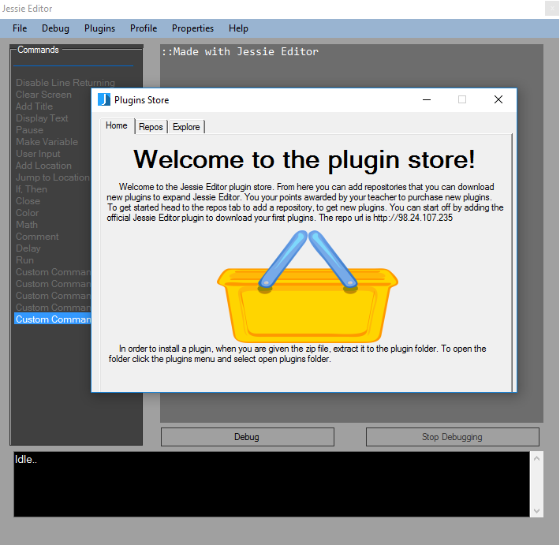
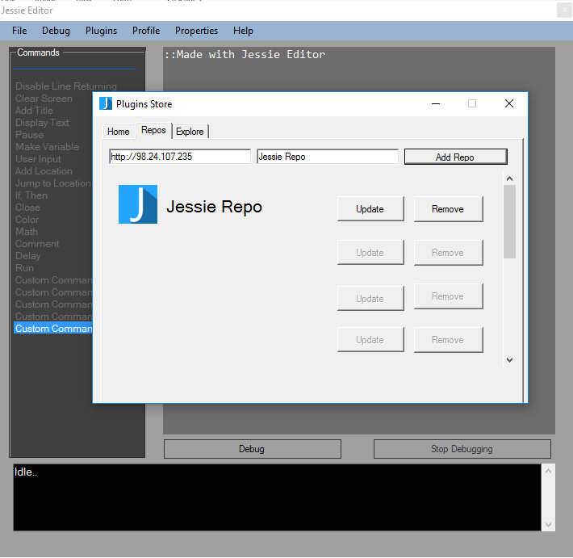
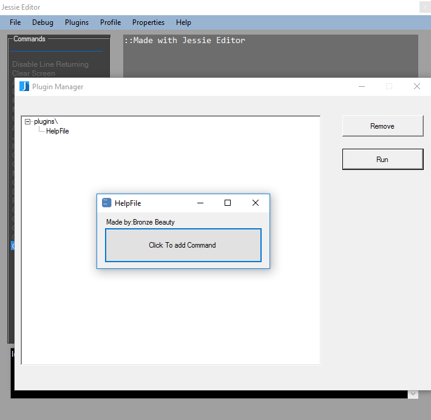

Plugins
Plugins are
programs that can be installed into Jessie Editor to expand the
functionallity of the program and to give the user more commands to
work with.
Getting Plugins
In order to get plugins you must goto the plugin store.
From Jessie Editor, click the plugins menu and select plugin's store. This will open the plugins store.
The plugin's store is where you can buy plugins for Jessie Editor using your points.

To get plugins, you first must add a plugin repository or repo. Click on the "Repos" tab to add a repo.
In
the textbox that says repo url, add the following repo IP
"http://98.24.107.235" and type in the text "Jessie Repo" into the
textbox that says repo name.
Click the Add Repo button to get the repo.

To get a plugin, goto the explore tab in the Plugins Store and select the "Jessie Repo" repository.
A list of plugins will populate the plugins list. Click the "HelpFile" plugin. This plugin is free and is used for
this tutorial. A popup box will notify you that "This plugin costs 0 points, are you sure you want to buy it?" .
Click yes and Jessie Editor will download it from the repo. Once it has finished Jessie Editor will notify you.
Click ok and the plugin's zip file will be opened. You have succesfully downloaded the plugin! Continue this tutorial
to learn how to install and use it.
Installing Plugins
Once you have gotten the zip file opened, click back onto Jessie Editor and close the Plugins store.
In the main editor select the plugins menu and select open plugins folder. Drag and drop the folder in
the plugin zip file into this folder. Once it is extracted close out the zip folder and the plugins folder and you
have sucessfully installed the plugin. Continue to read on to learn how to run the plugin.
Running Plugins
In the main editor, select the plugins menu and click manage. This will open the plugins manager. To run a plugin
select the plugins text and expand it. Select the plugin you want to run, or in our case its HelpFile, and click the run button.
This will start the plugin. You now know how to get,install, and run plugins!

back